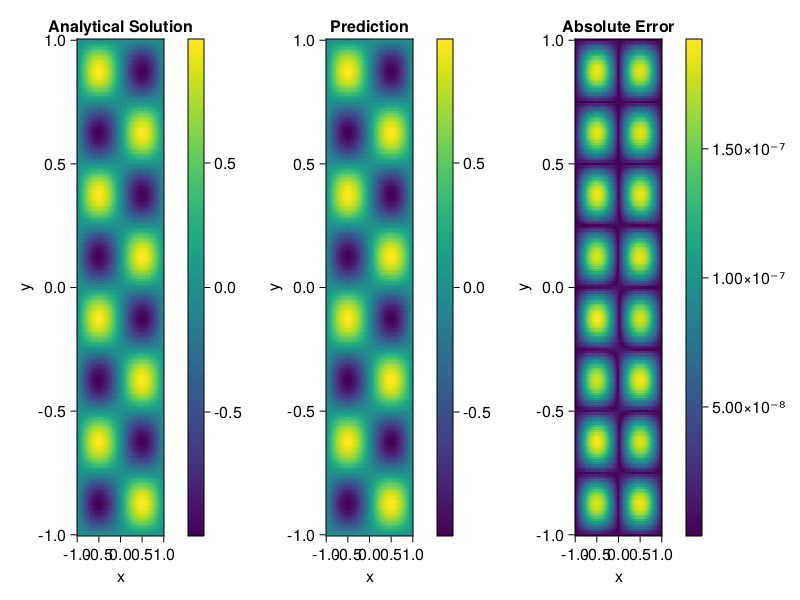

Helmholtz equation
Let us consider the Helmholtz equation in two space dimensions
\[\begin{aligned} &\Delta u(x, y)+k^{2} u(x, y)=q(x, y), \quad(x, y) \in \Omega:=(-1,1)^2 \\ &u(x, y)=0, \quad(x, y) \in \partial \Omega \end{aligned}\]
where
\[q(x, y)=-\left(a_{1} \pi\right)^{2} \sin \left(a_{1} \pi x\right) \sin \left(a_{2} \pi y\right)-\left(a_{2} \pi\right)^{2} \sin \left(a_{1} \pi x\right) \sin \left(a_{2} \pi y\right)+k^{2} \sin \left(a_{1} \pi x\right) \sin \left(a_{2} \pi y\right).\]
The excat solution is $u(x,y)=\sin{a_1\pi x}\sin{a_2\pi y}$. We chose $k=1, a_1 = 1$ and $a_2 = 4$.
using ModelingToolkit, IntervalSets, Sophon, Lux
using Optimization, OptimizationOptimJL
@parameters x,y
@variables u(..)
Dxx = Differential(x)^2
Dyy = Differential(y)^2
a1 = 1
a2 = 4
k = 1
q(x,y) = -(a1*π)^2 * sin(a1*π*x) * sin(a2*π*y) - (a2*π)^2 * sin(a1*π*x) * sin(a2*π*y) + k^2 * sin(a1*π*x) * sin(a2*π*y)
eq = Dxx(u(x,y)) + Dyy(u(x,y)) + k^2 * u(x,y) ~ q(x,y)
domains = [x ∈ Interval(-1,1), y ∈ Interval(-1,1)]
bcs = [u(-1,y) ~ 0, u(1,y) ~ 0, u(x, -1) ~ 0, u(x, 1) ~ 0]
@named helmholtz = PDESystem(eq, bcs, domains, [x,y], [u(x,y)])\[ \begin{align} \frac{\mathrm{d}}{\mathrm{d}y} \frac{\mathrm{d}}{\mathrm{d}y} u\left( x, y \right) + \frac{\mathrm{d}}{\mathrm{d}x} \frac{\mathrm{d}}{\mathrm{d}x} u\left( x, y \right) + u\left( x, y \right) =& - 166.78 \sin\left( 3.1416 x \right) \sin\left( 12.566 y \right) \end{align} \]
Note that the boundary conditions are compatible with periocity, which allows us to apply BACON.
chain = BACON(2, 1, 5, 2; hidden_dims = 32, num_layers=5)
pinn = PINN(chain) # call `gpu` on it if you want to use gpu
sampler = QuasiRandomSampler(300, 100)
strategy = NonAdaptiveTraining()
prob = Sophon.discretize(helmholtz, pinn, sampler, strategy)
@time res = Optimization.solve(prob, BFGS(); maxiters=1000)u: ComponentVector{Float64}(filters = (filter_1 = (bias = [-0.9465255309494105; -0.1593453354060397; … ; -0.19744486654748467; -0.9405271033348873;;]), filter_2 = (bias = [-0.12546391905239448; 0.5921574638468198; … ; -0.8868073304672225; 0.9549166284824134;;]), filter_3 = (bias = [-0.23968315326580134; 0.14271279620667013; … ; 0.5415784510415478; 0.16550374693127085;;]), filter_4 = (bias = [-0.3179157800497556; -0.9245329291968499; … ; 0.14704537344318888; -0.38836977597337186;;]), filter_5 = (bias = [-0.3309600171635742; 0.16140051792812973; … ; -0.3871070219241332; 1.0472143024683478;;])), linear_layers = (layer_1 = (weight = [-0.3300141410281597 -0.30770217442072434 … -0.03527447209492193 0.28557895558843743; 0.5041528551901592 0.13186254667293124 … -0.14943303166770866 0.002051577819602851; … ; -0.09021359722853081 -0.09844607775724638 … 0.3688878691033584 0.3198291625504459; -0.25631865443977386 -0.32703796977088784 … -0.00923909690329736 0.22721889508373783], bias = [-0.004239400426306457; -0.14444395466090884; … ; 0.056712338483399766; -0.05122154359147363;;]), layer_2 = (weight = [-0.29582103672734983 0.039519739631110835 … 0.12273382336374071 -0.15123082780906555; -0.1812119839920442 0.6500831426700758 … -0.2298517062175608 -0.3239394379157115; … ; 0.1876259279904466 -0.20145177439203793 … 0.15573949829315117 -0.07817072509564284; 0.1174446898802108 -0.2752410738053847 … -0.24356780121331217 0.04277886645123788], bias = [0.03338716240266129; -0.06904052687620828; … ; -0.028934970453853; 0.06607197149859491;;]), layer_3 = (weight = [-0.05833268027120813 -0.5108031041140977 … 0.49672109452855845 -0.3593054451124996; 0.4202550640629246 0.45123053817381553 … -0.0930379943989563 0.0904325199627549; … ; -0.03062283459262749 -0.291998454975055 … 0.4448322420740958 0.14713969911768157; 0.2534199218146717 -0.055856571382850266 … -0.08867052961529835 -0.21499705700188002], bias = [-0.08692178235622025; -0.011687093579113373; … ; -0.030075413509548943; 0.0468935149237788;;]), layer_4 = (weight = [-0.03042266821388966 0.13151086219978925 … -0.22305972481252756 0.26552368212208477; 0.21253596873055178 0.22477120898639177 … -0.47087616810416183 0.3945772801521388; … ; 0.29499875647184165 0.3342474313669241 … -0.37600970664948297 -0.21510075562845496; 0.4215742123986037 -0.09438773765795902 … 0.44382162132080744 0.4841401190574434], bias = [0.00015888693103490687; -0.021378898282000198; … ; -0.0034800870635769477; -0.032642027079546415;;])), output_layer = (weight = [-0.036308611935848056 -0.1685628118125832 … 0.05919489800974251 -0.014887958443721505], bias = [0.0371187245589184;;]))Let's plot the result.
phi = pinn.phi
xs, ys= [infimum(d.domain):0.01:supremum(d.domain) for d in domains]
u_analytic(x,y) = sinpi(a1*x)*sinpi(a2*y)
u_real = [u_analytic(x,y) for x in xs, y in ys]
phi_cpu = cpu(phi) # in case you are using GPU
ps_cpu = cpu(res.u)
u_pred = [sum(phi_cpu(([x,y]), ps_cpu)) for x in xs, y in ys]
using CairoMakie
axis = (xlabel="x", ylabel="y", title="Analytical Solution")
fig, ax1, hm1 = heatmap(xs, ys, u_real, axis=axis)
Colorbar(fig[:, end+1], hm1)
ax2, hm2= heatmap(fig[1, end+1], xs, ys, u_pred, axis= merge(axis, (;title = "Prediction")))
Colorbar(fig[:, end+1], hm2)
ax3, hm3 = heatmap(fig[1, end+1], xs, ys, abs.(u_pred-u_real), axis= merge(axis, (;title = "Absolute Error")))
Colorbar(fig[:, end+1], hm3)
fig